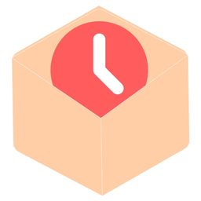
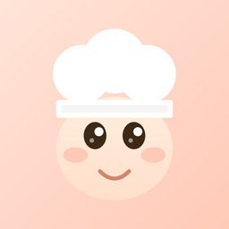

타임박스
할 일을 시간 블록으로 옮겨, 무엇을 할지가 아니라 언제 할지까지 정하는 플래너.
App Store에서 보기둘 다 블록에서 시작합니다. 하나는 하루를 시간 블록으로 자르고, 다른 하나는 재료 타일을 일곱 칸 슬롯에 쌓습니다.

할 일을 시간 블록으로 옮겨, 무엇을 할지가 아니라 언제 할지까지 정하는 플래너.
App Store에서 보기
같은 재료 세 개를 모으면 요리 완성. 슬롯은 일곱 칸뿐이라, 한 수만 잘못 골라도 막히는 타일 퍼즐.
App Store에서 보기